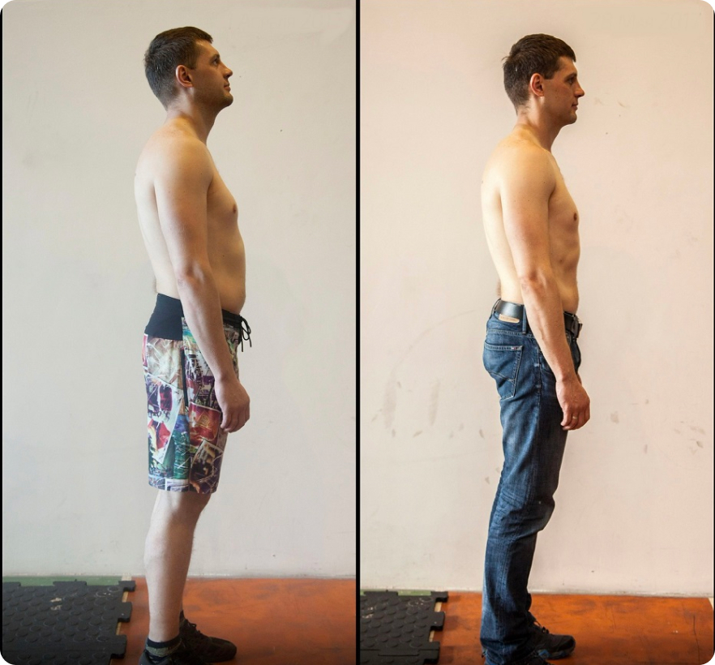
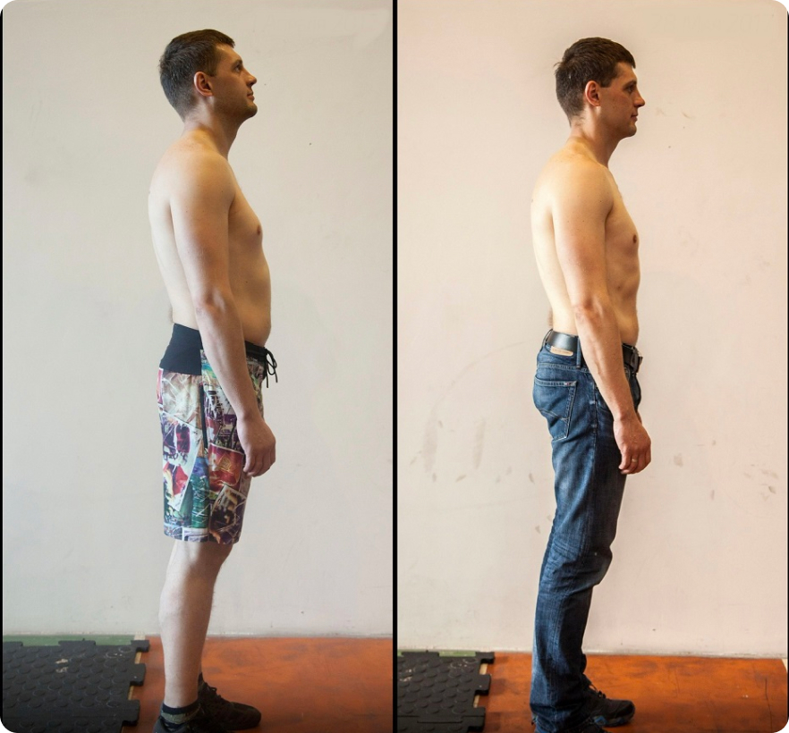

Достижения
Чемпион России по Кроссфиту
Победитель первого отборочного этапа на Crossfit Games

Серебряный призёр Чемпионата России по Кроссфиту
Серебряный призёр Siberian Showdown
Победитель кубка вызова “Ратиборец”
Победитель первого отборочного этапа на Crossfit Games
Мастер спорта международного класса
по аэробной гимнастике
Мастер спорта по становой тяге
Кандидат мастера спорта
и чемпион Москвы по регби
Обо мне

Российский Государственный Университет Культуры Спорта и Туризма Факультет – сложно-координационных видов спорта
Сертифицированные курсы – Crossfit Trainer
Курсы тренеров по физподготовке игроков в регби – Румыния 2014г, Бухарест
Персональная работа с Подопечными 2004 года «Планета Фитнес»
Сооснователь кроссфит залов Crossfit Flash (c 2013), главный тренер и спортивный директор
Основатель проекта Vitruvians Training (c 2020) - Онлайн Тренировки для дома без оборудования со своим весом
Главный тренер проекта по физической подготовке и выживанию в бою RmFight
Персональная работа в качестве тренера по физподготовке с сотрудниками Вымпел, Альфа, СО, СОБР, Рысь
Персональная работа с игроками профессиональных клубов и игроками Сборной России по регби
Персональная работа с фигуристами Сборной России
Раскрыл потенциал тела и духа +2000 подопечных
Миссия
Своей миссией я считаю - трансформацию жизни человека через спорт:
Улучшение её качества и увеличение продолжительности – настолько максимально, насколько это в принципе возможно.
Сбросить вес или набрать мышечную массу – это элементарная задача при должном соблюдении определенных тренировочных правил.
Глобальная же задача, которую я решаю со своими подопечными – это создание и поддержание такого тренировочного образа жизни, при котором Вы приходите к сбалансированно развитому телу и настолько крепкой ментальности, что любая жизненная задача становится легко преодолимой.
Моя основная специализация сейчас
В своей работе я превращаю просто успешных людей – в по-настоящему счастливых, живущих полной жизнью, использующих максимум возможностей своего тела успешных людей.
На текущий момент по большей части – я специализируюсь на изменении образа жизни Мужчин старше 35 лет, которые достигли в социальном плане того, к чему стремились.
Основу моих подопечных составляют непубличные люди: бизнесмены, топ-менеджеры и предприниматели высокого уровня, которые являются ролевыми моделями в абсолютно разных сферах.
Я знаю всё о трансформации образа жизни людей, у которых в этой жизни есть всё. Люди, с которыми я работаю, привыкли к самым высоким стандартам во всём. Они всегда выбирают лучшее. И поэтому в сфере фитнеса – выбирают меня.
Будучи атлетом мирового класса и персональным тренером с таким огромным и разнообразным опытом работы, я создал беспримерную, несравнимую ни с чем, репутацию в фитнес индустрии.
- Сбросить вес
- Набрать мышечную массу
- Улучшить свою производительность
- Повысить выносливость
- Увеличить силовые показатели
- Быть в форме 365 дней в году
- Подготовиться к решению любой индивидуальной задаче
- Улучшить качество и яркость каждого дня
Мой стиль работы
Я работаю с абсолютно разными психотипами людей, и под каждого человека – подбираю индивидуальный метод работы.
При этом – всегда придерживаюсь своих принципов: на тренировке мы готовим ВАС к жизни, а это значит, что абсолютно каждый подопечный в работе со мной становится более собранным, воле устойчивым, ответственным (за свой собственный результат), способным терпеть и достигать поставленной цели. Чтобы, победив себя в зале – Вы были готов побеждать и в жизни.
То, чем я занимаюсь – это моя основная деятельность и дело моей жизни.
В спорте высших достижений я – с 10 лет, тренирую – с 18. С 28 – владелец собственных кроссфит залов, через которые прошло за всё время более 10 000 человек.
Я не понаслышке знаю разницу между тренировками атлетов для достижения победы на соревнованиях и тренировками людей, для которых спорт является инструментом – для того, чтобы быть в форме и проживать каждый свой день максимально ярко и качественно.
В своей работе я использую очень много методов (начиная от легкой атлетики и гимнастики, заканчивая кроссфитом, тяжелой атлетикой и игровыми видами спорта, комбинируя их в зависимости от поставленной задачи).
При этом, я делаю акцент в первую очередь на работе с базой, используя максимально простые (базовые) тренировочные движения, которые создадут фундамент вашей подготовки, вместо использования сложно-координационных движений, при которых повышается риск получения травмы.
Помимо профессиональных аспектов, меня выбирают за высочайший уровень энергии и тот заряд, который я передаю каждому подопечному, на котором он затем идёт и сворачивает горы – решая свои повседневные задачи.
- 01 Спортсмен мирового уровня, мастер спорта международного класса
- 02 Знаю разницу между тренировкой профессиональных спортсменов и тренировками людей – для поддержания (создания) здорового образа жизни: я владелец кроссфит зала и зала единоборств, я тренировал профессиональных спортсменов, я тренирую и девушек в том числе, и я работаю индивидуально с людьми, для которых важен индивидуальный подход и полная конфиденциальность. Я комбинирую между собой столько тренировочных методов, сколько необходимо – для наилучшего результата
- 03 Мой взгляд на здоровье и физическую активность.Я считаю, что каждый человек должен стремиться к тому, что прожить минимум до 120 лет, а не программировать себя на старость с 30, как это делает большинство. Я считаю, что если вам 40 – это прекрасный возраст для того, чтобы тренироваться, изучать новое, внедрять хобби в свою жизнь и строить планы
Мое видение
«Продли свою молодость и живи минимум до 120 лет»
Продолжительность и качество жизни – мой приоритет в работе.
Мы перестаём делать какие-то вещи не из-за того, что стареем. А мы стареем потому, что перестаём делать то, что нам нравилось, то для чего нужно стараться и прикладывать усилия.
«Что можешь быть дороже жизни? И во сколько ты её оцениваешь?»
Жизнь – одна. И то, как ты относишься к своему телу и своему здоровью – напрямую влияет и на продолжительность вашей жизни и на её качество.
Продолжительность – очень важна. Но она меркнет, если в вашей жизни – нет жизни. Если вы живёте тускло, чувствуете себя – вяло, тяжело, не энергично. И не пользуетесь энергией и ресурсами своего организма на максимум.
Большинство моих подопечных – это люди, которые уже – высоко реализованы, иначе говоря – у которых есть в жизни всё.
И задача, для решения которой ко мне обращаются – это улучшить КАЧЕСТВО своей жизни: её чувствования, уровень энергии, здоровья, функциональных возможностей организма.
Чтобы ощущать – что вся жизнь – впереди. Что твой уровень энергии – также высок, как и в 20-25 лет. Что твои физические кондиции позволяют тебе заниматься любым хобби (бег, теннис, яхтинг, сёрфинг, тяжелая атлетика – всё, что угодно). Чтобы быть примером для своей семьи и своего окружения.
Моя задача работы с каждым подопечным – избавиться от этой угнетающей установки: «Я уже старый (мне 40+) / мне уже поздно (мне 50+) /я просто доживаю свою жизнь». И поменять на абсолютно новое видение: когда ты и в 50 и в 60 – бегаешь-плаваешь, работаешь с отягощениями, живёшь полноценной жизнью и продолжаешь заниматься своими хобби с такой же страстью, как ты это делал и 20-30 лет назад.
Я считаю, что каждый человек должен стремиться к тому, что прожить минимум до 120 лет, а не программировать себя на старость с 30, как это делает большинство. Я считаю, что если вам 40 – это прекрасный возраст для того, чтобы тренироваться, изучать новое, внедрять хобби в свою жизнь и строить планы.
Дополнительные плюсы работы со мной
Ответственность и никаких отговорок
Высокие стандарты жизни
Анонимность
«Медленный метаболизм и низкий тестостерон» – я знаю, как повернуть эти процессы вспять
Трансформация вредных привычек
Коммуникация и нетворкинг
Трансформации

 

Стоимость
1 тренировочная сессия выходит за пределы 1 часа
(длительность подбирается в зависимости
от тренировочной задачи и обговаривается заранее)